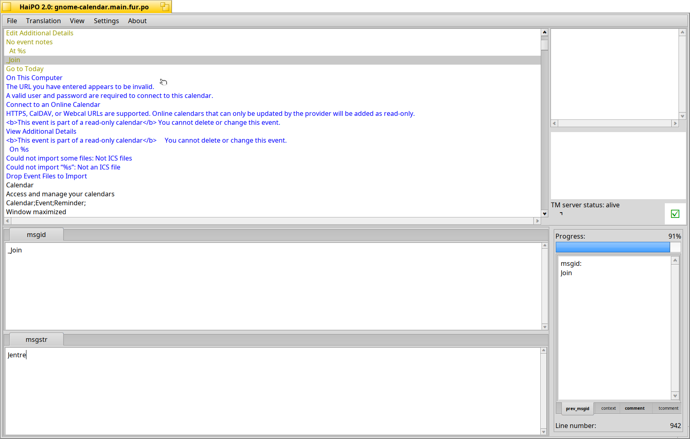
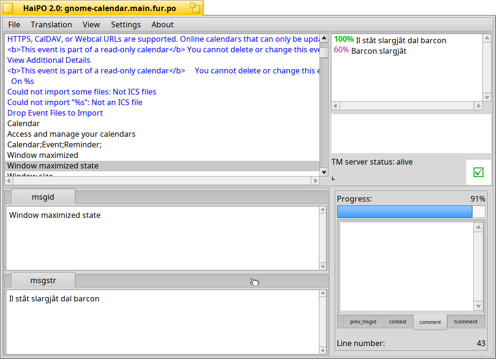
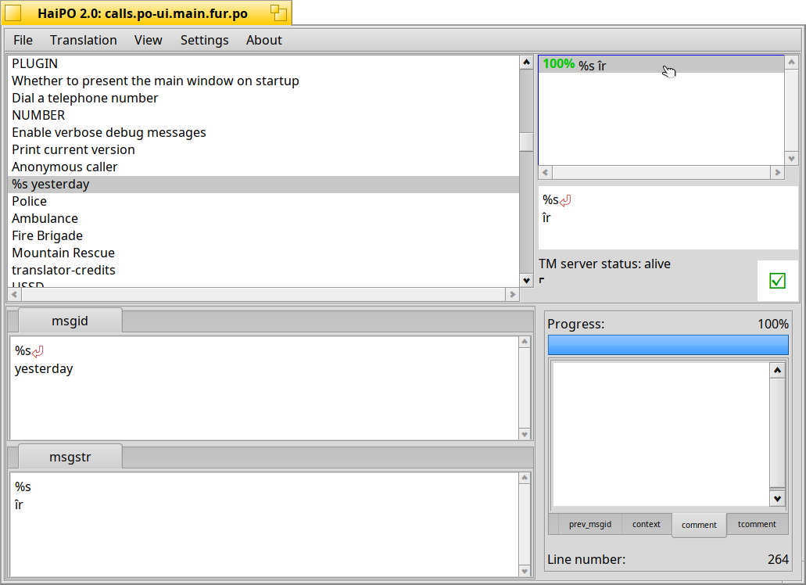
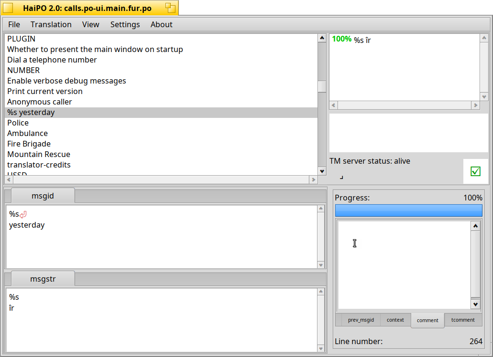
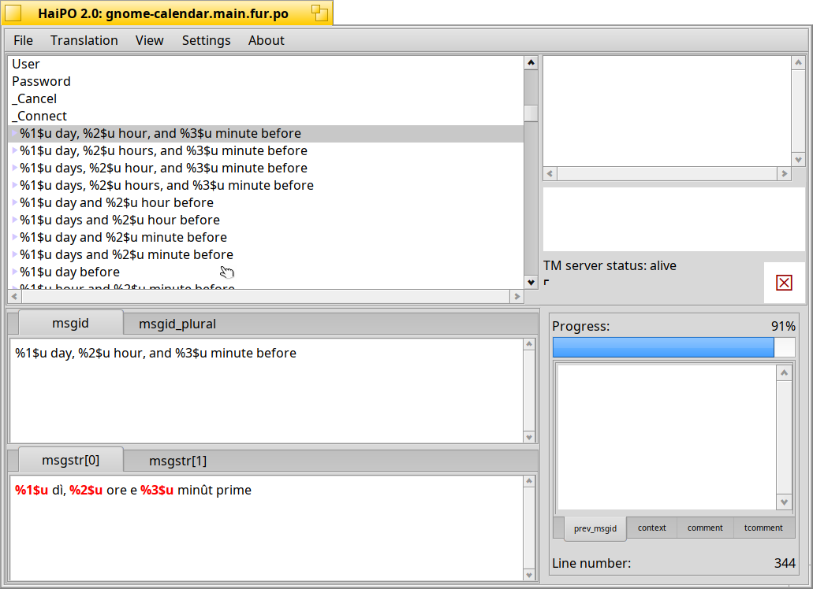
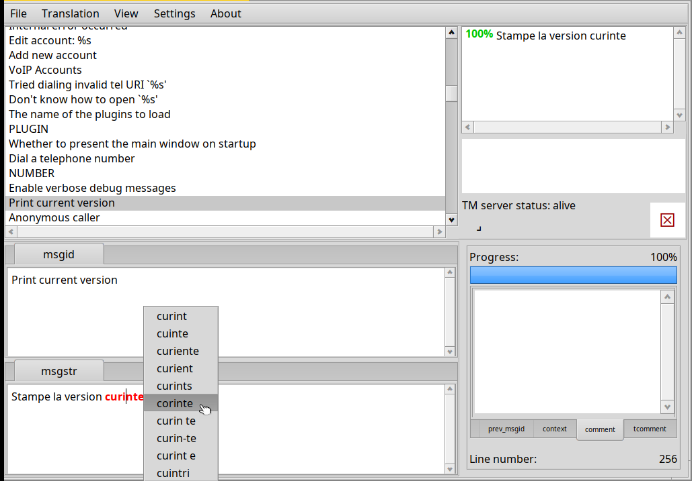

Topics
|
Interface details and user guideString List colors: When you load a po file their entries will be loaded in the top left list view. Every entry is displayed with its source string (the string in original language) and can be either a translated entry, an untranslated one, an obsolete one or a fuzzy one. The translated strings are written in black, the untranslated in blue, the obsolete in brown, and the fuzzy ones are ocher/yellow. You can see an example below:
 String List elements: In the above screenshot you can see that when you select an element, the other window sections will populate with its relative data. The source and translation fields are modified to handle plural entries. The Translation Memory (TM now on), if enabled and available, will show you compatible suggestions for your source string and if there's a comment, it will be shown in the comments tabs on the right-bottom of the window. If present, the relative tab title text will change to a bold font. If you need to add or modify the translator comment to the entry you can double click the source list entry, this will open a little window with an input field placed there for this purpose. In the picture below you can see an example of multiple suggestions from the TM.  Each suggestion has the relative percentage of correspondence by its side. A full correspondence has a green "100%" and lower ones have a violet percentage. By single-clicking a suggestion its preview will be shown just under the TM suggestion list. Like this screenshot: By double-clicking a suggestion you will replace the translation field with the selected suggestion.If a source string has some particular spacing, carriage returns (a new line), multiple spacing or tabulations, a special symbol will be drawn. The same happens in the suggestion preview. Those symbols will not be saved, they are just there to help the translator. Here is an example:  When a string presents a singular and a plural form, the list item appears with a light blue triangle on the left. If you select the list item, the source and the translation fields acquire additional tabs (the number of translation plural forms depends on the language used) here it is an example:  The translation field is modified to integrate the spellchecking function. Obviously this has to be enabled and configured properly. When an orthographic error is detected it will be highlighted with a bold red font.If you keep Ctrl key down and click a word, a contextual menu appears with relative spell checker suggestions. By clicking on a spell-check suggestion you replace the wrong word. Look here an example:  |